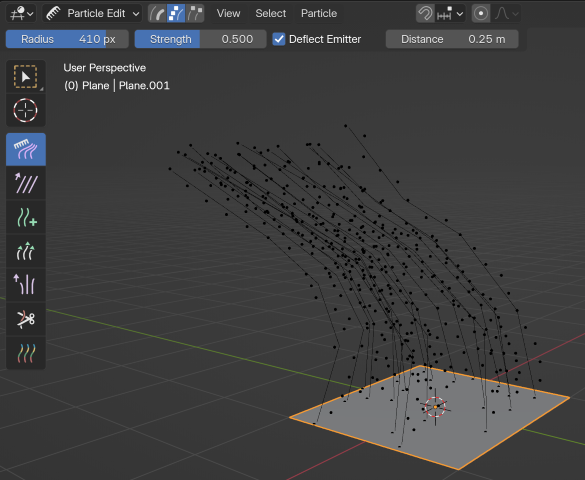
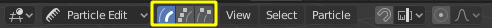

Particle Edit Mode¶
Sử dụng Particle Edit Mode, bạn có thể chỉnh sửa các điểm khóa (keyframe) và đường đi của các mô phỏng Hair, Particle, Cloth và Soft Body. (Bạn cũng có thể chỉnh sửa và tạo kiểu tóc trước khi bake.)
Vì việc làm việc trong Particle Edit Mode khá dễ và rất giống với làm việc cùng vertex trong 3D Viewport, chúng tôi sẽ hướng dẫn cách thiết lập một particle system rồi cung cấp tham chiếu về các chức năng khác nhau.
Quan trọng
Particle Edit Mode, đặc biệt dành cho tóc, đã bị loại bỏ; thay vào đó hãy dùng object mới Empty Hair cùng với Sculpt Mode đi kèm.
Quan trọng
Việc chỉnh sửa mô phỏng cloth đã được cache hiện chưa hoạt động, xem: blender/blender#77114 để biết chi tiết.
Cách dùng¶
Mẹo
Chỉ những frame được bake vào bộ nhớ mới có thể chỉnh sửa!
Nếu bạn không thể chỉnh sửa particle, hãy kiểm tra xem bạn có đang bake vào Disk Cache hay không.
Thiết lập cho Hair Particles¶
Tạo một particle system loại Hair.
Gán cho nó vận tốc ban đầu theo hướng Normal.
Tạo một mô phỏng.
Đánh dấu vào ô Hair Dynamics.

Chỉnh sửa các sợi tóc trong Particle Edit Mode.¶
Thiết lập cho các mô phỏng Particle, Cloth và Soft Body¶
Dùng particle loại Emitter, hoặc một mô phỏng cloth/soft body.
Tạo một mô phỏng bằng cách thiết lập các object và/hoặc emitter, đặt khoảng thời gian của bạn (dùng khoảng ngắn nếu bạn mới bắt đầu và đang thử nghiệm), thiết lập mô phỏng theo ý muốn, rồi phát animation để xem trước.
Bake mô phỏng¶
Khi bạn đã hài lòng với mô phỏng tổng thể, hãy bake mô phỏng từ Object Mode. Mô phỏng phải được bake thì mới chỉnh sửa được.
Chỉnh sửa mô phỏng¶
Chuyển sang Particle Edit từ menu chọn Mode ở header của 3D Viewport để chỉnh sửa đường đi/keyframe của particle. Bạn có thể cần nhấn T trong 3D Viewport để thấy hộp công cụ Particle Edit. Di chuyển đến frame bạn muốn chỉnh sửa và dùng các công cụ khác nhau để chỉnh sửa mô phỏng của mình.
Selecting¶
Mẹo
Chuyển sang Point select mode (xem bên dưới) ở header của 3D Viewport để có thể thấy và chọn các keypoint.
Chọn đơn lẻ: LMB.
Thêm vào/loại khỏi vùng chọn: Shift-LMB.
Tất cả: A.
Không: Alt-A.
Đảo ngược: Ctrl-I.
Box select: B.
Circle Select: C.
Lasso Select: Ctrl-Alt-LMB.
Select Linked: Di chuột qua một đường đi và nhấn L để thêm tất cả các điểm của nó vào vùng chọn.
Unselect Linked: Di chuột qua một đường đi và nhấn Shift-L để loại tất cả các điểm của nó khỏi vùng chọn.
Root/Tips: .
Select Random¶
Chọn ngẫu nhiên các particle.
- Percent
Tỷ lệ phần trăm particle được chọn ngẫu nhiên.
- Random Seed
Giá trị Seed dùng cho lần chọn này.
- Action
Chức năng Select Random có thể được dùng để chọn hoặc bỏ chọn particle.
- Type
Chọn hair hoặc points. Ở đây các thuật ngữ này có thể gây nhầm lẫn vì hair/point không chỉ loại particle mà chỉ đường đi/điểm của hair/particle.
Các chế độ chọn¶

Các chế độ chọn.¶
- Path:
Không có keypoint nào hiển thị, bạn chỉ có thể chọn/bỏ chọn toàn bộ particle.
- Point:
Bạn thấy tất cả các keypoint.
- Tip:
Bạn chỉ có thể thấy và chỉnh sửa (kể cả bằng các brush) tip của particle, tức là keypoint cuối cùng.
Tools¶
Tham khảo
- Mode:
Particle Edit Mode
- Tool:
Comb¶
Di chuyển các keypoint (tương tự công cụ Proportional Editing).
- Deflect Emitter
Chỉ dành cho hair particle -- Không di chuyển keypoint xuyên qua mesh phát.
- Distance
Khoảng cách cần giữ với Emitter.
Smooth¶
Làm song song các segment liền kề về mặt hiển thị.
Add¶
Thêm particle mới.
- Count
Số lượng particle mới mỗi bước.
- Interpolate
Nội suy hình dạng của tóc mới từ những sợi hiện có.
- Steps
Số bước của brush.
- Keys
Số key dùng để tạo particle mới.
Length¶
Co giãn các segment, nhờ đó làm tóc dài ra với Grow hoặc ngắn lại với Shrink.
- Grow/Shrink
Đặt brush để thêm hiệu ứng hoặc đảo ngược hiệu ứng.
Puff¶
Xoay tóc quanh keypoint đầu tiên của nó (root). Nhờ đó làm tóc dựng đứng lên với Add hoặc nằm xuống với Sub.
- Puff Volume
Áp dụng puff cho các điểm cuối chưa được chọn, (giúp giữ thể tích tóc khi puff root.)
Cut¶
Co giãn các segment cho đến khi keypoint cuối cùng chạm tới brush.
Weight¶
Điều này đặc biệt hữu ích cho animation soft body, vì trọng số định nghĩa Goal của soft body. Một keypoint có trọng số 1 sẽ không hề di chuyển, còn keypoint với trọng số 0 sẽ chịu tác động hoàn toàn của animation soft body. Giá trị này được co giãn theo khoảng Min đến Max của Strength dành cho các goal của soft body...
Common Options¶
Bên dưới các loại brush là các cài đặt của chúng:
- Radius F
Đặt bán kính của brush.
- Strength Shift-F
Đặt cường độ hiệu ứng của brush (không áp dụng cho brush Add).
Tùy chọn¶
Tham khảo
- Mode:
Particle Edit Mode
- Panel:
- Auto-Velocity Emitter
Tính lại vận tốc của particle theo đường đi đã chỉnh sửa của chúng. Nếu không, giá trị vận tốc gốc vẫn giữ nguyên bất kể khoảng cách thực tế mà particle di chuyển.
- Mirror X
Bật chỉnh sửa đối xứng qua trục X cục bộ.
- Preserve
- Strand Length
Giữ nguyên độ dài các segment giữa các keypoint khi chải hoặc làm mượt tóc. Việc này được thực hiện bằng cách di chuyển tất cả các keypoint còn lại.
- Root Positions
Giữ nguyên key đầu tiên không bị thay đổi, vì thế bạn không thể chuyển ghép tóc sang chỗ khác.
Cắt particle theo hình dạng¶
- Shape Object
Một mesh object mà ranh giới của nó được dùng bởi công cụ Shape Cut.
- Cut
Công cụ chỉnh trang này cắt tỉa tóc theo hình dạng được xác định bởi Shape Object. Đây là cách nhanh hơn để tránh các phần tóc nhô ra bị kéo dài so với dùng công cụ Cut. Nó đặc biệt hiệu quả với các nhân vật có bộ lông dày, khi mà làm việc trên một mặt phẳng duy nhất với công cụ Cut trở nên nặng nhọc.
Viewport Display¶
- Path Steps
Số bước dùng để vẽ đường đi; cải thiện độ mượt của đường đi particle.
- Children Hair
Hiển thị cả các children của particle. Điều này cho phép tinh chỉnh particle và xem tác động của chúng lên kết quả, nhưng có thể làm hệ thống của bạn chậm lại nếu có quá nhiều children.
- Particles Emitter
Hiển thị các particle thực bên trên các đường đi.
- Fade Time
Làm mờ dần các đường đi và key càng xa thời điểm hiện tại.
- Frames
Số frame sẽ mờ dần.
Editing¶
Di chuyển keypoint hoặc particle¶
Để di chuyển các keypoint đã chọn, hãy nhấn G, hoặc dùng một trong các phương pháp di chuyển vertex khác.
Để di chuyển root của particle, bạn phải tắt Keep Root trong Toolbar.
Bạn có thể làm nhiều việc giống như với vertex, bao gồm phóng to/thu nhỏ, xoay và xóa (nguyên particle hoặc từng key đơn lẻ).
Bạn không thể duplicate hoặc extrude key hay particle, nhưng có thể subdivide particle để thêm keypoint mới qua .
Ngoài ra, bạn có thể re-key một particle qua .
Độ mượt khi hiển thị đường đi của tóc và particle phụ thuộc vào cài đặt Path Steps trong Toolbar. Giá trị thấp cho nội suy khối góc giữa các điểm, trong khi giá trị cao cho đường cong mượt mà.
Mirror¶
Tham khảo
- Mode:
Particle Edit Mode
- Menu:
Nếu bạn muốn tạo kiểu tóc đối xứng qua trục X, bạn phải thực hiện các bước sau:
Chọn tất cả particle bằng A.
Mirror các particle bằng .
Bật X Mirror trong .
Có thể xảy ra việc sau khi mirror, hai particle chiếm gần như cùng một vị trí. Vì điều này sẽ lãng phí bộ nhớ và thời gian render, bạn có thể dùng Merge by Distance từ menu Particle.
Unify Length¶
Tham khảo
- Mode:
Particle Edit Mode
- Menu:
Công cụ này dùng để đưa tất cả tóc được chọn về độ dài đồng đều bằng cách tính độ dài trung bình.
Show/Hide¶
Tham khảo
- Mode:
Particle Edit Mode
- Menu:
Việc ẩn và hiện lại particle hoạt động tương tự như với vertex trong 3D Viewport. Chọn một hoặc nhiều keypoint của particle bạn muốn ẩn rồi nhấn H. Thực tế particle không hề biến mất, chỉ các keypoint mà thôi.
Particle bị ẩn (tức là particle có keypoint bị ẩn) sẽ không phản ứng với các brush. Nhưng:
Nếu bạn dùng Mirror Editing, ngay cả particle có keypoint bị ẩn cũng có thể bị di chuyển, nếu phần đối xứng của chúng được di chuyển.
Để hiện lại toàn bộ particle bị ẩn, hãy nhấn Alt-H.